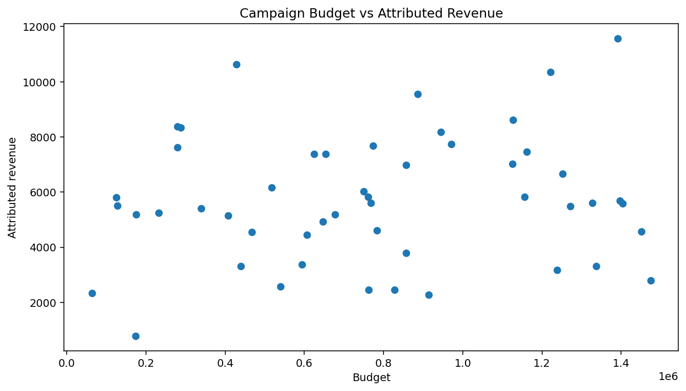
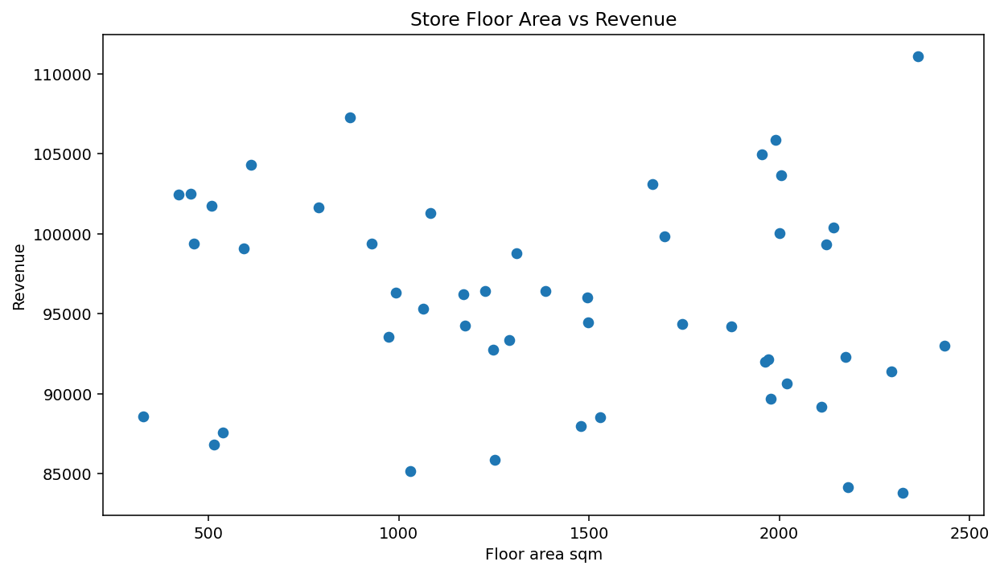
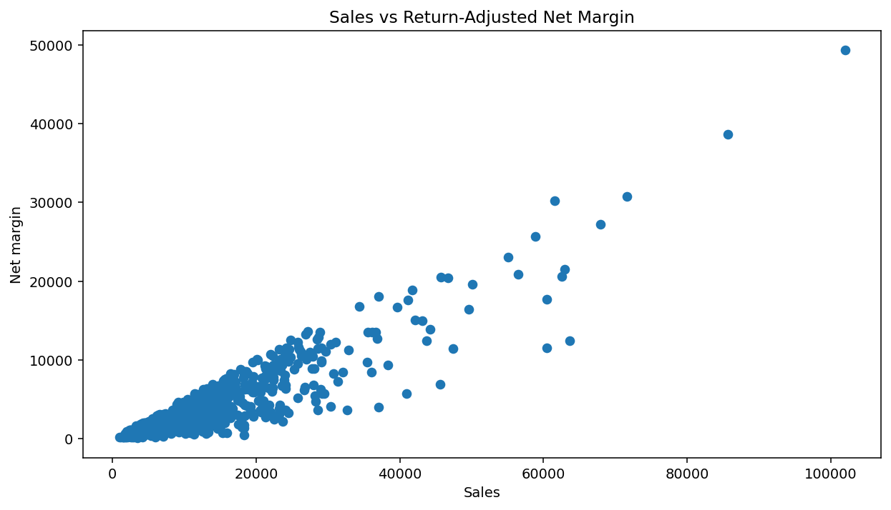
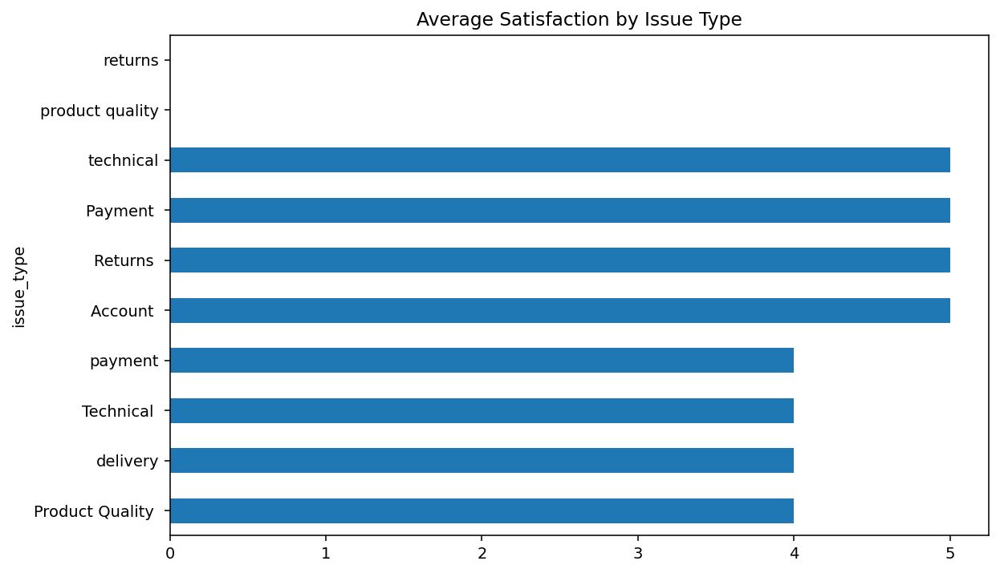

VISUAL EVIDENCE
EDA that can be read by a business audience.
These are real analytical outputs from the supplied portfolio projects. Each visual is paired with the business question it is intended to illuminate.






HOW TO READ THE EVIDENCE
A chart is not the conclusion.
The portfolio treats visualisation as part of a reasoning chain. The next question is what the pattern means, what alternative explanations exist, and what decision the evidence can legitimately support.